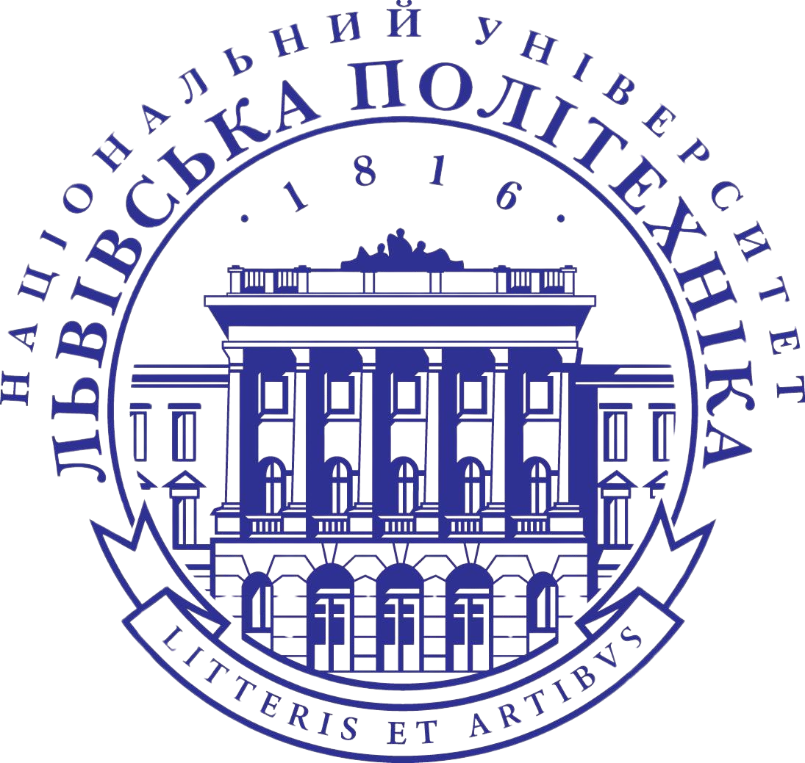

Націона́льний університе́т «Льві́вська політе́хніка» — університет технічного профілю зі статусом національного, заснований 1816 року у місті Львові. За оцінками Times Higher Education 2024, посідає перше місце в Україні як технічний заклад вищої освіти та друге серед всіх закладів вищої освіти після Сумського державного університету. Університет є найбільшим навчальним закладом України за кількістю студентів та одним з найбільших за кількістю інститутів (підрозділів) та кафедр.
